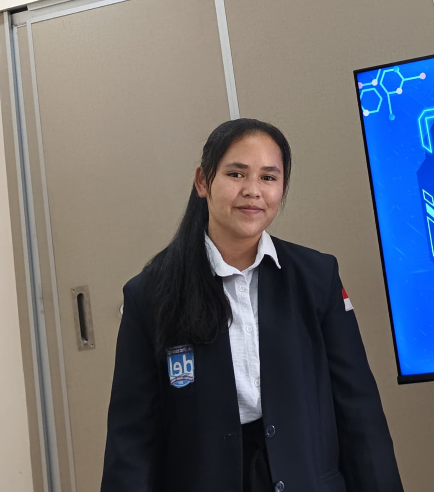
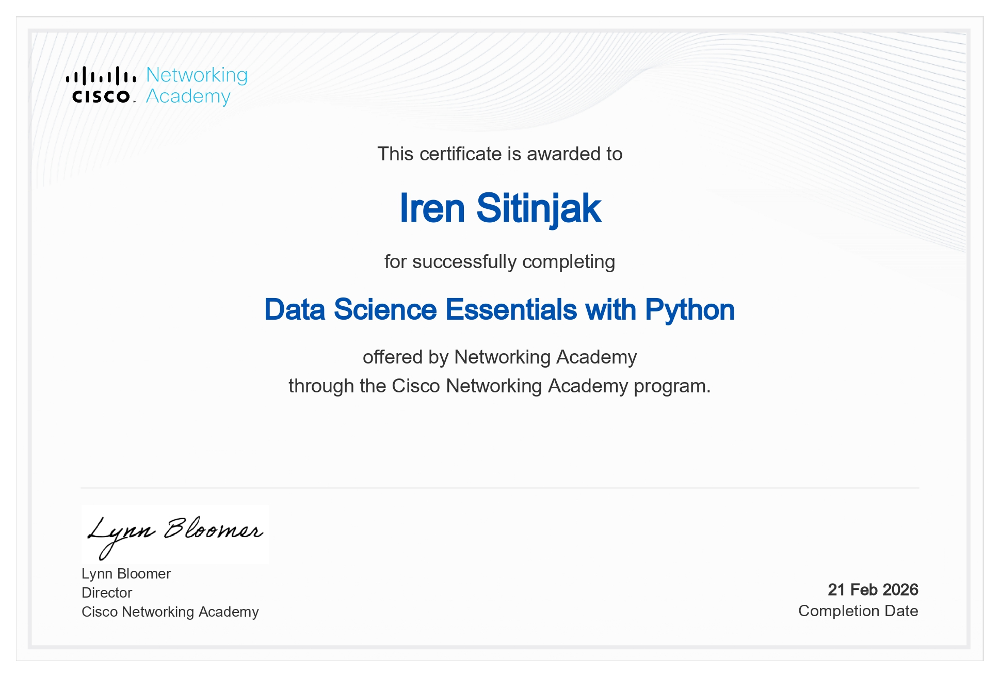

Education
Institut Teknologi Del
Computer Technology StudentHello, I'm
I am a Computer Technology student with an interest in web development, cloud computing, AI, data analysis, and computer networking.
SI enjoy learning new technologies and developing solutions through the projects I work on.

Technology Enthusiast
Get to know my background, interests and journey in the field of technology.
I am a Computer Technology student at the Del Institute of Technology. Throughout my studies, I have explored various fields of technology, including computer networking, cloud computing systems, software development, and the Internet of Things.
I am interested in developing my skills through hands-on practice, academic projects, and the exploration of technology. For me, every project is an opportunity to understand problems, test solutions, and enhance my abilities.
Moving forward, I would like to continue developing my skills in the IT field—specifically in Web Development, Quality Assurance, Cloud Computing, and Software Engineering.
Institut Teknologi Del
Computer Technology StudentInformation Technology
Web developer, Data analys, AI Enthusiast, Cloud, IoT, QAHIMATEK
KPU HIMATEK
Continuous Learning
Growing through projectsMy educational journey and academic background that have shaped my knowledge and technical skills.
Laguboti, North Sumatra, Indonesia
Studied Mathematics and Natural Sciences (MIPA), focusing on Mathematics, Physics, Chemistry, and Biology. Developed analytical thinking, logical reasoning, problem-solving, and scientific research skills through theoretical learning and practical activities. Gained a strong foundation in understanding scientific concepts, analyzing data, and approaching problems systematically.
Laguboti, North Sumatra, Indonesia
Pursuing a Diploma in Computer Technology with a focus on computer networking, software development, cloud computing, and Internet of Things (IoT). Throughout the academic program, I have gained knowledge and practical experience in programming, web development, database management, operating systems, network configuration, computer virtualization, and distributed systems.
The coursework also covers system programming, software engineering, interface design, data communications, and network security. These learning experiences have helped me develop technical problem-solving, analytical thinking, and practical skills in designing, developing, and managing computer-based systems.
A collection of projects, certificates, and skills that I have developed.
 01
01
Configured a DNS server using BIND9 on Ubuntu Server to manage local domain name resolution. The project involved configuring forward and reverse lookup zones, defining DNS records, validating zone configurations, and testing domain resolution using command-line tools such as nslookup and dig.
View Project ↗ 02
02
Developed a two-player console-based strategy game using C on Linux, implementing operating system concepts such as process management, inter-process communication (IPC), shared memory, semaphore, and signal handling. The game uses synchronized player turns, coordinate-based guessing, and score tracking to manage gameplay between two independent processes.
View Project ↗ 03
03
Implemented a private cloud environment using OpenStack DevStack on Ubuntu Server through VirtualBox. The project involved preparing the virtual machine, configuring network access, deploying OpenStack services, accessing the Horizon dashboard, and creating virtual machine instances to explore cloud computing infrastructure.
View Project PDF ↗ 04
04
Implemented an integrated network infrastructure consisting of DNS Server, Web Server, Load Balancer, and two Mail Servers on Rocky Linux. The project focused on configuring communication between network services within a single subnet and automating server installation and configuration using Ansible playbooks.
View Project ↗ 05
05
Developed a web-based Cybersecurity Readiness Index (CRI) assessment system to evaluate cybersecurity readiness and analyze user behavior during questionnaire completion. The system integrates Laravel, MySQL, and AI/LLM-based time recommendations to evaluate response duration, calculate assessment scores, and provide monitoring and analytica l reports for administrators and teachers.
View Project ↗ 06
06
Developed a web-based laboratory inventory management system to manage equipment data, monitor item availability and conditions, and handle borrowing and return processes. The application provides separate access for administrators and students, including inventory management, borrowing approval, transaction history, and report generation.
View Project ↗
Documentation of certificates from training sessions or activities that have been attended.
View Certificate PDF ↗
Documentation of certificates from training sessions or activities that have been attended
View Certificate PDF ↗
Documentation of certificates from training sessions or activities that have been attended
View Certificate PDF ↗
Documentation of certificates from training sessions or activities that have been attended
View Certificate PDF ↗
Documentation of certificates from training sessions or activities that have been attended
View Certificate PDF ↗Membangun dan mengembangkan antarmuka website.
Mempelajari implementasi layanan komputasi awan.
Mempelajari evaluasi kesiapan dan perilaku keamanan siber.
Memahami pengujian dan pemeriksaan kualitas perangkat lunak.
Mempelajari jaringan komputer dan konfigurasi sistem.
Mengenal lingkungan Linux untuk kebutuhan server.
Mengembangkan kolaborasi dan komunikasi melalui proyek serta kegiatan organisasi.
Integrating AI technology and Large Language Models (LLMs) to support data analysis and the development of web-based systems.
Pengalaman akademik, kontribusi dalam organisasi, dan kegiatan yang membantu saya mengembangkan keterampilan profesional.
Served as a member of the Publication Division at the Computer Technology Student Association (HIMATEK), contributing to the creation and publication of organizational information and supporting the visual communication of student activities.
Participated in the HIMATEK Student Election Committee (KPU), specifically in the voting recapitulation division, supporting the collection, recording, and organization of voting results to ensure accurate election data.
Participated as a committee member in the Inauguration and Graduation events, contributing to event preparation, coordination, and implementation to support the smooth execution of the activities.
Participated in the organizing committee of an Artificial Intelligence (AI) seminar at Gread Nusa, contributing to the preparation and coordination of the event to support its successful implementation.
Open to discussion, learning together, collaborating, and exploring opportunities in the field of technology.
Feel free to contact me via email or check out the projects available on GitHub.
Send Me an Email ↗ Visit My GitHub